## install.packages("descr")
library(descr) # freq()
## install.packages("ggplot2")
library(ggplot2)# numerical variable
v1 <- runif(100, 0, 7.5) # generate 10 random numbers between 0 and 7.5
v2 <- runif(100, 7.5, 15)
# categorical variable
v3 <- sample(c("x", "y", "z", "n"), size = 100, replace = T) # randomly sample 10 observations out of x, y, z
v4 <- sample(c("a", "b", "c", "n"), size = 100, replace = T)
v5 <- sample(c("p", "q", "n"), size = 100, replace = T)
# combine variables into a dataframe
ie.df <- data.frame(v1, v2, v3, v4, v5)
# save as csv
write.table(ie.df, file = "C:\\Users\\tonyr\\Downloads\\QAC201Z_Material\\example.csv", sep = ",", row.names = F)# sort by ascending v1
ie.df <- ie.df[order(ie.df$v1, decreasing = F), ]# subset observations with x
ie.x <- ie.df[ie.df$v3 == "x", ]
# subset observations with x and a
ie.xa <- ie.df[ie.df$v3 == "x" & ie.df$v4 == "a", ]# label missing data with NA
## v3 and v4 "n" codes for NA
ie.df$v3[ie.df$v3 == "n"] <- NA
ie.df$v4[ie.df$v4 == "n"] <- NA
ie.df$v5[ie.df$v5 == "n"] <- NA
# subset observations without NA values in any variables
na.omit(ie.df)## v1 v2 v3 v4 v5
## 73 0.1963496 8.626761 z a p
## 65 0.4856479 13.477002 y c q
## 29 0.6183918 10.538966 y a p
## 16 0.6785091 9.884174 x c p
## 76 0.6886094 9.045791 x b q
## 46 0.7289492 8.884892 y c p
## 69 0.8472445 12.549697 z b q
## 92 1.0693690 9.156360 y a p
## 86 1.9617776 14.963161 z c p
## 85 1.9852984 8.029560 y c q
## 19 2.4631142 12.197065 y a p
## 90 2.6296689 10.326881 y a q
## 34 2.6955288 12.296455 y c p
## 55 2.9579796 13.956430 z a q
## 43 3.3991046 12.115761 y c q
## 21 3.4734150 11.447470 z b p
## 8 3.5097535 12.497629 y a q
## 77 3.8765050 9.561751 y c q
## 100 4.6558346 11.457892 z c q
## 24 5.1942016 14.783406 y a p
## 80 5.1960093 11.008852 x b q
## 81 5.2587746 13.274085 y b p
## 4 5.3931125 8.805999 z b q
## 96 6.4105097 12.981084 z a p
## 37 6.4666241 8.260568 x b q
## 95 6.6100831 14.405234 x c q
## 41 7.0388859 8.813112 x c q
## 98 7.1425539 14.903684 y c p
## 7 7.1952851 9.431568 x a p
## 83 7.3485252 11.061213 x b p
## 75 7.3497494 13.990833 x c p
## 63 7.4478689 9.489595 x a q# subset observations without NA values in selected variable
ie.df[!is.na(ie.df$v3),]## v1 v2 v3 v4 v5
## 26 0.1287067 12.273682 y <NA> q
## 10 0.1888047 10.613381 z a <NA>
## 73 0.1963496 8.626761 z a p
## 45 0.3454776 12.087977 y <NA> p
## 65 0.4856479 13.477002 y c q
## 56 0.5277847 10.944745 z a <NA>
## 54 0.5730061 9.061092 x <NA> q
## 29 0.6183918 10.538966 y a p
## 16 0.6785091 9.884174 x c p
## 76 0.6886094 9.045791 x b q
## 46 0.7289492 8.884892 y c p
## 69 0.8472445 12.549697 z b q
## 92 1.0693690 9.156360 y a p
## 48 1.1850474 8.882350 z <NA> p
## 18 1.4464387 8.257294 x a <NA>
## 25 1.6798055 10.894973 x <NA> q
## 5 1.7546979 9.161829 z <NA> q
## 17 1.7730990 13.550261 x <NA> <NA>
## 86 1.9617776 14.963161 z c p
## 31 1.9824770 12.524678 x <NA> p
## 85 1.9852984 8.029560 y c q
## 28 2.1046603 12.129716 z b <NA>
## 52 2.4197384 10.590496 y c <NA>
## 19 2.4631142 12.197065 y a p
## 93 2.5411522 9.631490 z c <NA>
## 90 2.6296689 10.326881 y a q
## 34 2.6955288 12.296455 y c p
## 42 2.7150702 12.852823 z <NA> <NA>
## 6 2.8087288 14.873896 y <NA> <NA>
## 15 2.9152571 13.300759 z <NA> p
## 97 2.9397622 14.265048 z c <NA>
## 55 2.9579796 13.956430 z a q
## 47 3.3020025 9.674667 z a <NA>
## 43 3.3991046 12.115761 y c q
## 88 3.4723164 10.692476 x a <NA>
## 21 3.4734150 11.447470 z b p
## 8 3.5097535 12.497629 y a q
## 32 3.5146947 9.031464 y <NA> p
## 14 3.6609454 7.657028 x <NA> p
## 51 3.7037270 9.726865 x <NA> <NA>
## 22 3.7450664 11.258469 z <NA> p
## 77 3.8765050 9.561751 y c q
## 72 3.8822121 13.617065 y a <NA>
## 39 3.9043785 10.136744 x <NA> p
## 71 3.9175368 14.664537 x b <NA>
## 87 4.0659164 11.031562 y <NA> <NA>
## 70 4.1376339 13.840419 x <NA> q
## 62 4.5168199 11.326039 z <NA> q
## 100 4.6558346 11.457892 z c q
## 79 5.0016547 14.606296 x a <NA>
## 24 5.1942016 14.783406 y a p
## 80 5.1960093 11.008852 x b q
## 2 5.2346553 8.214614 y b <NA>
## 81 5.2587746 13.274085 y b p
## 11 5.2663907 7.873678 z <NA> <NA>
## 4 5.3931125 8.805999 z b q
## 58 5.7756014 8.351900 z b <NA>
## 64 5.9634686 14.547172 x a <NA>
## 36 6.0089506 10.012144 z <NA> p
## 35 6.2233852 9.895038 z <NA> q
## 89 6.2325058 14.865673 z <NA> q
## 67 6.2471900 14.698435 x <NA> <NA>
## 82 6.3981752 10.389739 y a <NA>
## 96 6.4105097 12.981084 z a p
## 37 6.4666241 8.260568 x b q
## 12 6.5766207 12.776588 y <NA> p
## 59 6.5971116 13.947606 y b <NA>
## 91 6.5974275 8.594420 y b <NA>
## 95 6.6100831 14.405234 x c q
## 53 6.7604095 7.718819 z <NA> p
## 33 6.8646527 12.877175 x <NA> <NA>
## 84 6.9449539 7.666473 x a <NA>
## 27 6.9950327 10.498642 x a <NA>
## 41 7.0388859 8.813112 x c q
## 98 7.1425539 14.903684 y c p
## 7 7.1952851 9.431568 x a p
## 74 7.2210260 9.472205 z <NA> <NA>
## 83 7.3485252 11.061213 x b p
## 75 7.3497494 13.990833 x c p
## 63 7.4478689 9.489595 x a q# bin v1 into 4 sections
ie.df$v6[ie.df$v1 < 2] <- 1
ie.df$v6[ie.df$v1 >=2 & ie.df$v1 < 4] <- 2
ie.df$v6[ie.df$v1 >= 4 & ie.df$v1 < 6] <- 3
ie.df$v6[ie.df$v1 >= 6 & ie.df$v1 < 8] <- 4
# combine v3 and v4 into v7
ie.df$v7[is.na(ie.df$v3) | is.na(ie.df$v4)] <- NA
ie.df$v7[ie.df$v3 == "x" & ie.df$v4 == "a"] <- "xa"
ie.df$v7[ie.df$v3 == "x" & ie.df$v4 == "b"] <- "xb"
ie.df$v7[ie.df$v3 == "x" & ie.df$v4 == "c"] <- "xc"
ie.df$v7[ie.df$v3 == "y" & ie.df$v4 == "a"] <- "ya"
ie.df$v7[ie.df$v3 == "y" & ie.df$v4 == "b"] <- "yb"
ie.df$v7[ie.df$v3 == "y" & ie.df$v4 == "c"] <- "yc"
ie.df$v7[ie.df$v3 == "z" & ie.df$v4 == "a"] <- "za"
ie.df$v7[ie.df$v3 == "z" & ie.df$v4 == "b"] <- "zb"
ie.df$v7[ie.df$v3 == "z" & ie.df$v4 == "c"] <- "zc"
# sum up v1 and v2 into v7
ie.df$v8 <- ie.df$v1 + ie.df$v2names(ie.df)[names(ie.df) == "v8"] <- "v1_v2"
names(ie.df)[names(ie.df) == "v7"] <- "v3_v4"
names(ie.df)[names(ie.df) == "v6"] <- "v1_level"levels(ie.df$v1_level) <- c("lowest", "low", "high", "highest")# frequency
#library(descr)
freq(as.ordered(ie.df$v3_v4))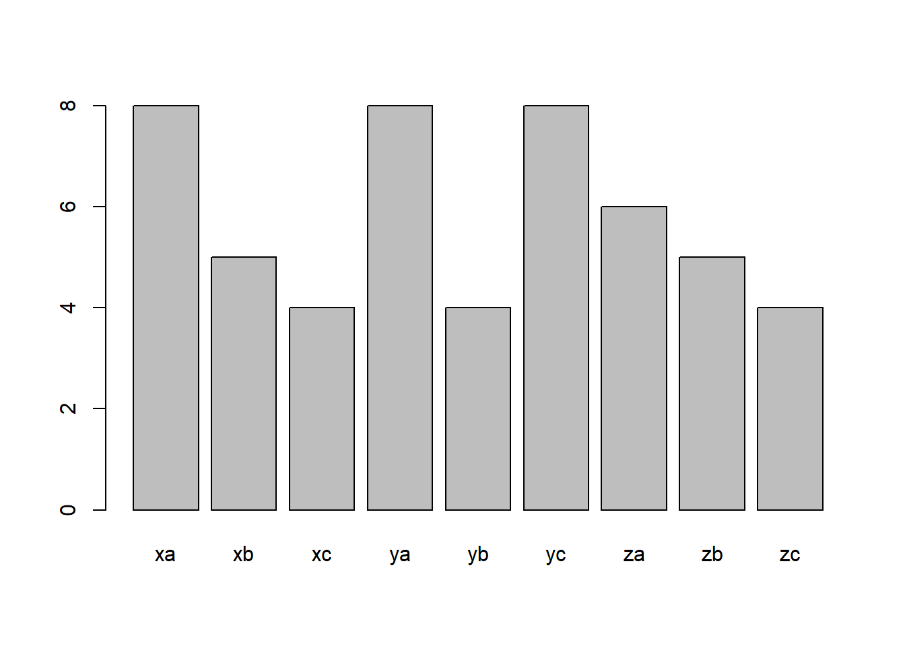
## as.ordered(ie.df$v3_v4)
## Frequency Percent Valid Percent Cum Percent
## xa 8 8 15.385 15.38
## xb 5 5 9.615 25.00
## xc 4 4 7.692 32.69
## ya 8 8 15.385 48.08
## yb 4 4 7.692 55.77
## yc 8 8 15.385 71.15
## za 6 6 11.538 82.69
## zb 5 5 9.615 92.31
## zc 4 4 7.692 100.00
## NA's 48 48
## Total 100 100 100.000# frequency barplot
#library(ggplot2)
ggplot(data = na.omit(ie.df)) + # na.omit() removes any observations containing NA
geom_bar(aes(x = v3_v4)) +
ggtitle("v3_v4 frequency barplot")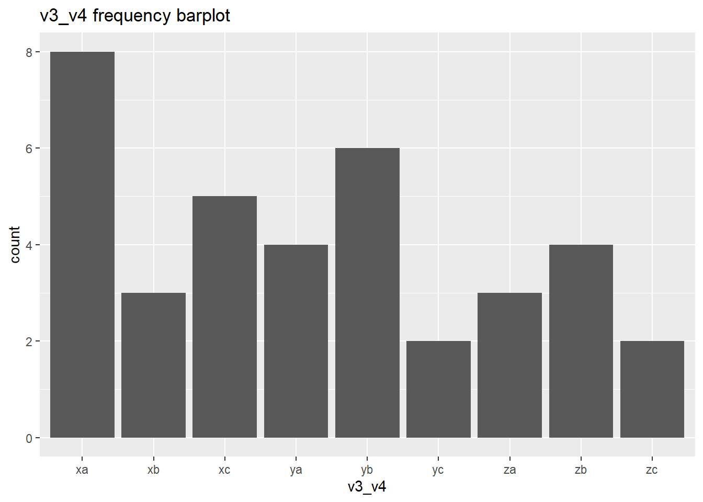
# mean and standard deviation
mean(ie.df$v1_v2, na.rm = T)## [1] 15.07985sd(ie.df$v1_v2, na.rm = T)## [1] 3.303996# histogram
ggplot(data = ie.df)+
geom_histogram(aes(x = v1_v2))+
ggtitle("v1_v2 histogram")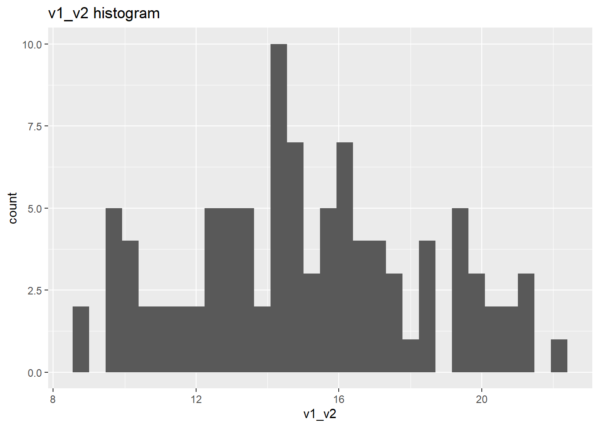
# crosstabs
table(ie.df$v3, ie.df$v4)##
## a b c
## x 8 5 4
## y 8 4 8
## z 6 5 4prop.table(table(ie.df$v3, ie.df$v4), 2) # col proportions##
## a b c
## x 0.3636364 0.3571429 0.2500000
## y 0.3636364 0.2857143 0.5000000
## z 0.2727273 0.3571429 0.2500000prop.table(table(ie.df$v3, ie.df$v4), 1) # row proportions##
## a b c
## x 0.4705882 0.2941176 0.2352941
## y 0.4000000 0.2000000 0.4000000
## z 0.4000000 0.3333333 0.2666667prop.table(table(ie.df$v3, ie.df$v4)) # cell proportions##
## a b c
## x 0.15384615 0.09615385 0.07692308
## y 0.15384615 0.07692308 0.15384615
## z 0.11538462 0.09615385 0.07692308# for binary categorical response
graph_data <- data.frame(v3 = na.omit(ie.df)$v3,
v5 = ifelse(na.omit(ie.df)$v5 == "p", 0, 1))
ggplot(data = graph_data)+
stat_summary(aes(x=v3, y = v5), fun = "mean", geom = "bar")+
ylab("poriton of responses that are '1 (aka. q)'")+
ggtitle("percentage of q within v3 groups")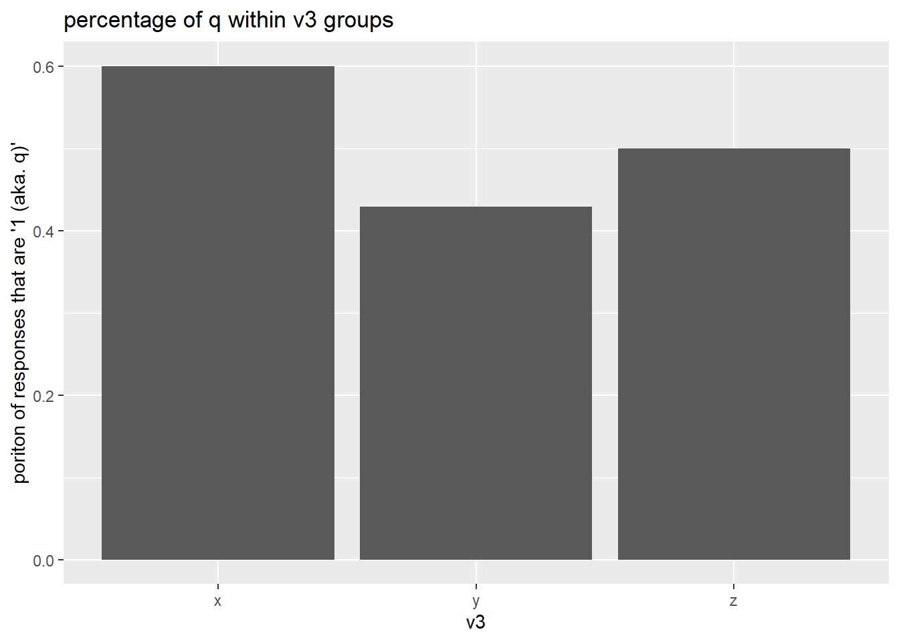
# stacked barplot for mutli-level categorical responses
graph_data <- data.frame(v4 = c(rep("a", 3), rep("b", 3), rep("c", 3)),
v3 = rep(c("x", "y", "z"), 3),
value = as.numeric(table(ie.df$v3, ie.df$v4)))
ggplot(data = graph_data, aes(fill = v4, x = v3, y = value))+
geom_bar(position = "stack", stat = "identity")+
ylab("number of observations")+
ggtitle("number of subjects at each response level within each group")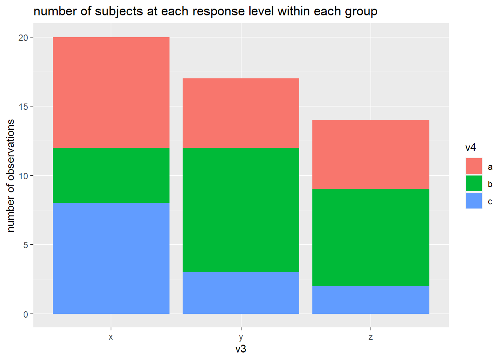
# mean by group
by(ie.df$v1, ie.df$v3_v4, mean, na.rm = T)## ie.df$v3_v4: xa
## [1] 5.558377
## ----------------------------------------------------------------------
## ie.df$v3_v4: xb
## [1] 4.723461
## ----------------------------------------------------------------------
## ie.df$v3_v4: xc
## [1] 5.419307
## ----------------------------------------------------------------------
## ie.df$v3_v4: ya
## [1] 3.220611
## ----------------------------------------------------------------------
## ie.df$v3_v4: yb
## [1] 5.921992
## ----------------------------------------------------------------------
## ie.df$v3_v4: yc
## [1] 2.841666
## ----------------------------------------------------------------------
## ie.df$v3_v4: za
## [1] 2.263905
## ----------------------------------------------------------------------
## ie.df$v3_v4: zb
## [1] 3.518807
## ----------------------------------------------------------------------
## ie.df$v3_v4: zc
## [1] 3.024632# standard deviation by group
by(ie.df$v1, ie.df$v3_v4, sd, na.rm = T)## ie.df$v3_v4: xa
## [1] 2.137086
## ----------------------------------------------------------------------
## ie.df$v3_v4: xb
## [1] 2.602039
## ----------------------------------------------------------------------
## ie.df$v3_v4: xc
## [1] 3.175046
## ----------------------------------------------------------------------
## ie.df$v3_v4: ya
## [1] 1.957976
## ----------------------------------------------------------------------
## ie.df$v3_v4: yb
## [1] 0.7798052
## ----------------------------------------------------------------------
## ie.df$v3_v4: yc
## [1] 2.098517
## ----------------------------------------------------------------------
## ie.df$v3_v4: za
## [1] 2.463682
## ----------------------------------------------------------------------
## ie.df$v3_v4: zb
## [1] 2.106256
## ----------------------------------------------------------------------
## ie.df$v3_v4: zc
## [1] 1.159229# number of observations in group
by(ie.df$v1, ie.df$v3_v4, length)## ie.df$v3_v4: xa
## [1] 8
## ----------------------------------------------------------------------
## ie.df$v3_v4: xb
## [1] 5
## ----------------------------------------------------------------------
## ie.df$v3_v4: xc
## [1] 4
## ----------------------------------------------------------------------
## ie.df$v3_v4: ya
## [1] 8
## ----------------------------------------------------------------------
## ie.df$v3_v4: yb
## [1] 4
## ----------------------------------------------------------------------
## ie.df$v3_v4: yc
## [1] 8
## ----------------------------------------------------------------------
## ie.df$v3_v4: za
## [1] 6
## ----------------------------------------------------------------------
## ie.df$v3_v4: zb
## [1] 5
## ----------------------------------------------------------------------
## ie.df$v3_v4: zc
## [1] 4# barplot
ggplot(data = na.omit(ie.df))+
stat_summary(aes(x = v3_v4, y = v1), fun = "mean", geom = "bar")+
ggtitle("mean barplot")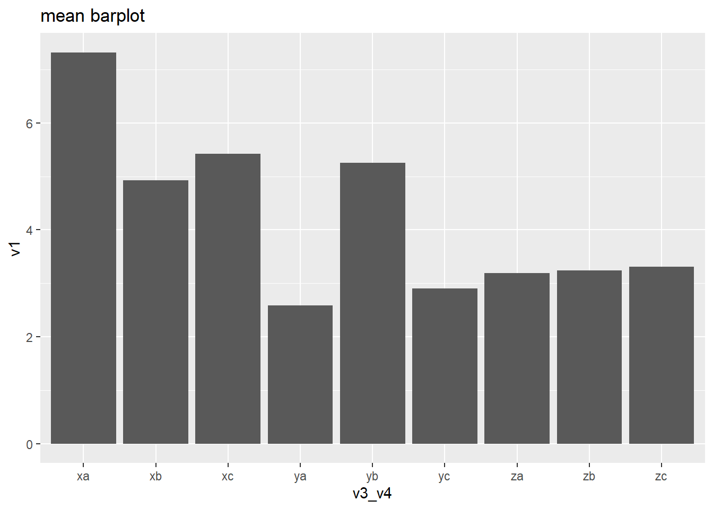
# boxplot
ggplot(data = na.omit(ie.df))+
geom_boxplot(aes(x = v3_v4, y = v1))+
ggtitle("boxplot")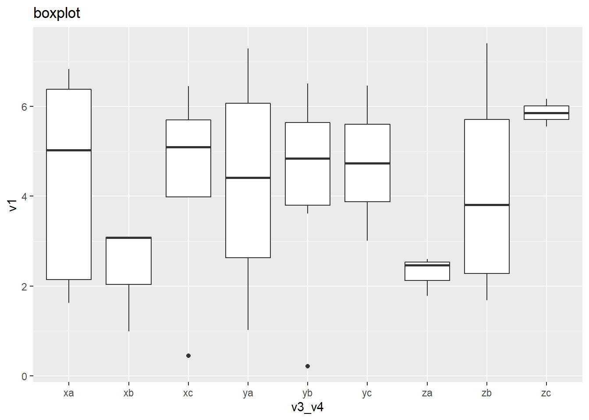
ggplot(data = na.omit(ie.df), aes(x = v1, y = v1_v2))+
geom_point()+
geom_smooth(method = "lm")+
ggtitle("Correlation between v1_v2 and v1")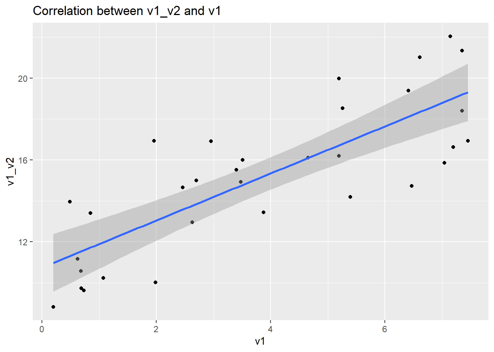
# for binary categorical response
graph_data <- data.frame(v3 = na.omit(ie.df)$v3,
v5 = ifelse(na.omit(ie.df)$v5 == "p", 0, 1),
v4 = na.omit(ie.df)$v4)
ggplot(data = graph_data)+
stat_summary(aes(x=v3, y = v5), fun = "mean", geom = "bar")+
facet_grid(.~v4)+
ylab("poriton of responses that are '1 (aka. q)'")+
ggtitle("percentage of q within v3 groups")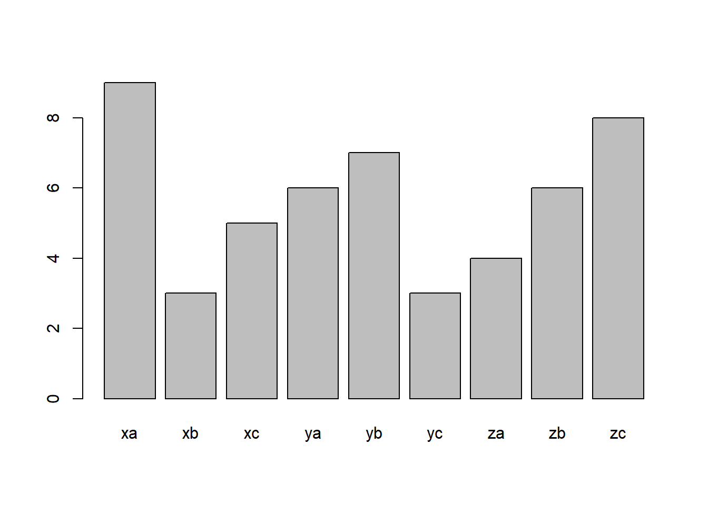
# stacked barplot for mutli-level categorical responses
graph_data <- data.frame(v4 = rep(c(rep("a", 3), rep("b", 3), rep("c", 3)), 2),
v3 = rep(c("x", "y", "z"), 6),
value = c(as.numeric(table(ie.df[ie.df$v5 == "p",]$v3, ie.df[ie.df$v5 == "p",]$v4)),
as.numeric(table(ie.df[ie.df$v5 == "q",]$v3, ie.df[ie.df$v5 == "q",]$v4))),
v5 = c(rep("p", 9), rep("q", 9)))
ggplot(data = graph_data)+
geom_bar(position = "stack", aes(fill = v4, x = v3, y = value), stat = "identity")+
facet_grid(.~v5)+
ylab("number of observations")+
ggtitle("number of subjects at each response level within each group")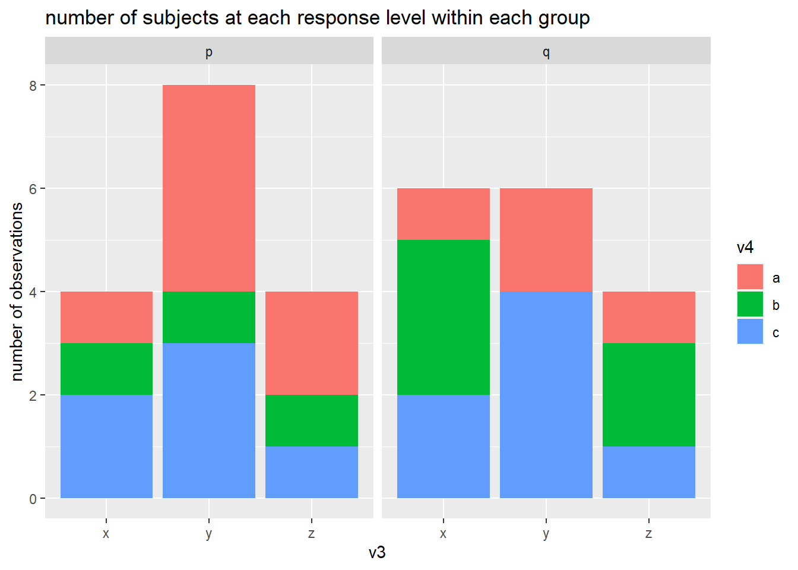
# mean by group
ftable(by(ie.df$v1_v2, list(ie.df$v3_v4, ie.df$v5), mean, na.rm = T))## p q
##
## xa 16.62685 16.93746
## xb 18.40974 13.55548
## xc 15.95163 18.43366
## ya 14.00522 14.48197
## yb 18.53286 NA
## yc 15.55069 13.23266
## za 14.10735 16.91441
## zb 14.92089 13.79803
## zc 16.92494 16.11373# boxplot
ggplot(data = na.omit(ie.df)) +
geom_boxplot(aes(x = v3_v4, y = v1_v2))+
facet_grid(.~v5)+
ggtitle("")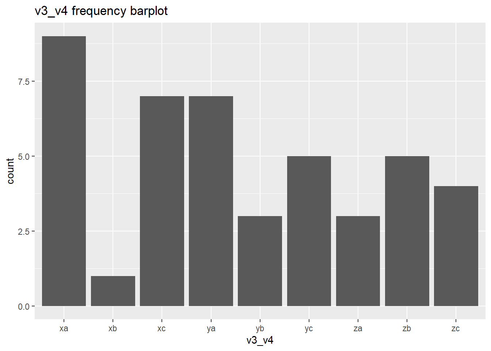
ggplot(data = na.omit(ie.df), aes(x = v1, y = v1_v2))+
geom_point()+
geom_smooth(method = "lm")+
facet_grid(.~v5)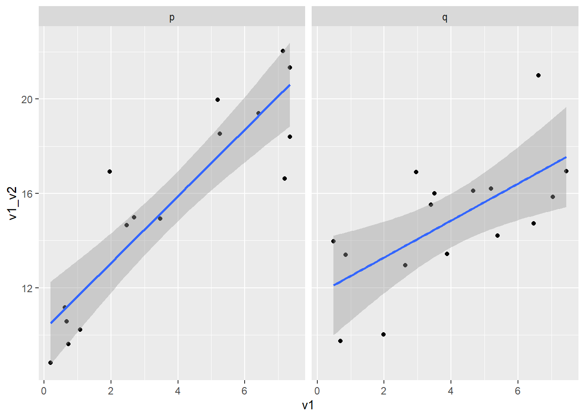
# chisquare
chisq.test(na.omit(ie.df)$v4, na.omit(ie.df)$v3)##
## Pearson's Chi-squared test
##
## data: na.omit(ie.df)$v4 and na.omit(ie.df)$v3
## X-squared = 4.8872, df = 4, p-value = 0.2991# chisquare cell counts
chisq.test(na.omit(ie.df)$v4, na.omit(ie.df)$v3)$observed## na.omit(ie.df)$v3
## na.omit(ie.df)$v4 x y z
## a 2 6 3
## b 4 1 3
## c 4 7 2# posthoc (for more than two levels)
source("https://raw.githubusercontent.com/PassionDrivenStatistics/R/master/ChiSquarePostHoc.R")
chisq.post.hoc(chisq.test(na.omit(ie.df)$v4, na.omit(ie.df)$v3)$observed,
popsInRows = F,
control = "bonferroni")## Adjusted p-values used the bonferroni method.## comparison raw.p adj.p
## 1 x vs. y 0.2226 0.6679
## 2 x vs. z 0.8400 1.0000
## 3 y vs. z 0.2695 0.8084# Pearson Residuals
chisq.test(na.omit(ie.df)$v4, na.omit(ie.df)$v3)$residuals## na.omit(ie.df)$v3
## na.omit(ie.df)$v4 x y z
## a -0.77532984 0.54131274 0.15075567
## b 0.94868330 -1.33630621 0.70710678
## c -0.03100868 0.55034954 -0.69337525by(na.omit(ie.df), na.omit(ie.df)$v5, function(x) list(chisq.test(x$v4, x$v3),
chisq.test(x$v4, x$v3)$observed,
prop.table(chisq.test(x$v4, x$v3)$observed, 2)))## na.omit(ie.df)$v5: p
## [[1]]
##
## Pearson's Chi-squared test
##
## data: x$v4 and x$v3
## X-squared = 1.0952, df = 4, p-value = 0.895
##
##
## [[2]]
## x$v3
## x$v4 x y z
## a 1 4 2
## b 1 1 1
## c 2 3 1
##
## [[3]]
## x$v3
## x$v4 x y z
## a 0.250 0.500 0.500
## b 0.250 0.125 0.250
## c 0.500 0.375 0.250
##
## ----------------------------------------------------------------------
## na.omit(ie.df)$v5: q
## [[1]]
##
## Pearson's Chi-squared test
##
## data: x$v4 and x$v3
## X-squared = 4.5238, df = 4, p-value = 0.3397
##
##
## [[2]]
## x$v3
## x$v4 x y z
## a 1 2 1
## b 3 0 2
## c 2 4 1
##
## [[3]]
## x$v3
## x$v4 x y z
## a 0.1666667 0.3333333 0.2500000
## b 0.5000000 0.0000000 0.5000000
## c 0.3333333 0.6666667 0.2500000# anova
summary(aov(v1_v2 ~ v3_v4, data = na.omit(ie.df)))## Df Sum Sq Mean Sq F value Pr(>F)
## v3_v4 8 52.5 6.562 0.434 0.888
## Residuals 23 347.4 15.105# posthoc
TukeyHSD(aov(v1_v2 ~ v3_v4, data = na.omit(ie.df)))## Tukey multiple comparisons of means
## 95% family-wise confidence level
##
## Fit: aov(formula = v1_v2 ~ v3_v4, data = na.omit(ie.df))
##
## $v3_v4
## diff lwr upr p adj
## xb-xa -2.013110766 -13.499144 9.472922 0.9994461
## xc-xa 0.410486428 -11.075547 11.896519 1.0000000
## ya-xa -2.618024435 -13.447160 8.211111 0.9947646
## yb-xa 1.750700863 -14.493003 17.994404 0.9999857
## yc-xa -2.556059673 -13.190060 8.077941 0.9949620
## za-xa -1.739120673 -13.846463 10.368221 0.9998725
## zb-xa -2.609846033 -14.717188 9.497496 0.9975962
## zc-xa -0.262826487 -13.525755 13.000102 1.0000000
## xc-xb 2.423597194 -6.954709 11.801904 0.9918854
## ya-xb -0.604913669 -9.166097 7.956270 0.9999995
## yb-xb 3.763811629 -11.064593 18.592216 0.9927811
## yc-xb -0.542948907 -8.855929 7.770031 0.9999997
## za-xb 0.273990093 -9.855739 10.403719 1.0000000
## zb-xb -0.596735267 -10.726464 9.532994 0.9999999
## zc-xb 1.750284279 -9.735749 13.236317 0.9998019
## ya-xc -3.028510862 -11.589694 5.532673 0.9467380
## yb-xc 1.340214435 -13.488190 16.168619 0.9999963
## yc-xc -2.966546100 -11.279526 5.346434 0.9441593
## za-xc -2.149607101 -12.279336 7.980122 0.9978433
## zb-xc -3.020332461 -13.150061 7.109396 0.9800765
## zc-xc -0.673312914 -12.159346 10.812720 0.9999999
## yb-ya 4.368725298 -9.956875 18.694325 0.9771820
## yc-ya 0.061964762 -7.316847 7.440777 1.0000000
## za-ya 0.878903761 -8.499403 10.257210 0.9999951
## zb-ya 0.008178401 -9.370128 9.386485 1.0000000
## zc-ya 2.355197948 -8.473938 13.184334 0.9974438
## yc-yb -4.306760536 -18.485427 9.871906 0.9777189
## za-yb -3.489821536 -18.804532 11.824889 0.9964826
## zb-yb -4.360546896 -19.675258 10.954164 0.9849841
## zc-yb -2.013527350 -18.257231 14.230176 0.9999582
## za-yc 0.816938999 -8.335351 9.969229 0.9999967
## zb-yc -0.053786361 -9.206077 9.098504 1.0000000
## zc-yc 2.293233186 -8.340767 12.927233 0.9975891
## zb-za -0.870725360 -11.699861 9.958410 0.9999985
## zc-za 1.476294187 -10.631048 13.583636 0.9999631
## zc-zb 2.347019547 -9.760322 14.454361 0.9988576by(na.omit(ie.df), na.omit(ie.df)$v5, function(x) list(aov(v1_v2 ~ v3_v4, data = x),
summary(aov(v1_v2 ~ v3_v4, data = x)),
TukeyHSD(aov(v1_v2 ~ v3_v4, data = x))))## na.omit(ie.df)$v5: p
## [[1]]
## Call:
## aov(formula = v1_v2 ~ v3_v4, data = x)
##
## Terms:
## v3_v4 Residuals
## Sum of Squares 34.52986 250.17170
## Deg. of Freedom 8 7
##
## Residual standard error: 5.978195
## Estimated effects may be unbalanced
##
## [[2]]
## Df Sum Sq Mean Sq F value Pr(>F)
## v3_v4 8 34.53 4.32 0.121 0.996
## Residuals 7 250.17 35.74
##
## [[3]]
## Tukey multiple comparisons of means
## 95% family-wise confidence level
##
## Fit: aov(formula = v1_v2 ~ v3_v4, data = x)
##
## $v3_v4
## diff lwr upr p adj
## xb-xa 1.7828848 -34.07017 37.63594 0.9999996
## xc-xa -0.6752205 -31.72488 30.37444 1.0000000
## ya-xa -2.6216351 -30.96597 25.72270 0.9999501
## yb-xa 1.9060063 -33.94705 37.75906 0.9999993
## yc-xa -1.0761658 -30.35006 28.19773 1.0000000
## za-xa -2.5195012 -33.56916 28.53016 0.9999814
## zb-xa -1.7059681 -37.55903 34.14709 0.9999997
## zc-xa 0.2980849 -35.55497 36.15114 1.0000000
## xc-xb -2.4581053 -33.50776 28.59155 0.9999846
## ya-xb -4.4045199 -32.74885 23.93981 0.9979611
## yb-xb 0.1231215 -35.72994 35.97618 1.0000000
## yc-xb -2.8590505 -32.13295 26.41485 0.9999251
## za-xb -4.3023860 -35.35204 26.74727 0.9990671
## zb-xb -3.4888529 -39.34191 32.36420 0.9999271
## zc-xb -1.4847999 -37.33786 34.36826 0.9999999
## ya-xc -1.9464146 -23.90184 20.00901 0.9999637
## yb-xc 2.5812268 -28.46843 33.63088 0.9999777
## yc-xc -0.4009453 -23.54399 22.74210 1.0000000
## za-xc -1.8442808 -27.19622 23.50766 0.9999919
## zb-xc -1.0307476 -32.08041 30.01891 1.0000000
## zc-xc 0.9733054 -30.07635 32.02296 1.0000000
## yb-ya 4.5276414 -23.81669 32.87197 0.9975495
## yc-ya 1.5454694 -17.81739 20.90833 0.9999836
## za-ya 0.1021339 -21.85329 22.05756 1.0000000
## zb-ya 0.9156670 -27.42866 29.26000 1.0000000
## zc-ya 2.9197200 -25.42461 31.26405 0.9998889
## yc-yb -2.9821720 -32.25607 26.29173 0.9998976
## za-yb -4.4255075 -35.47517 26.62415 0.9988664
## zb-yb -3.6119744 -39.46503 32.24108 0.9999057
## zc-yb -1.6079213 -37.46098 34.24514 0.9999998
## za-yc -1.4433355 -24.58638 21.69971 0.9999975
## zb-yc -0.6298023 -29.90370 28.64410 1.0000000
## zc-yc 1.3742507 -27.89965 30.64815 0.9999997
## zb-za 0.8135332 -30.23613 31.86319 1.0000000
## zc-za 2.8175862 -28.23207 33.86724 0.9999568
## zc-zb 2.0040530 -33.84900 37.85711 0.9999990
##
##
## ----------------------------------------------------------------------
## na.omit(ie.df)$v5: q
## [[1]]
## Call:
## aov(formula = v1_v2 ~ v3_v4, data = x)
##
## Terms:
## v3_v4 Residuals
## Sum of Squares 53.85293 57.43611
## Deg. of Freedom 7 8
##
## Residual standard error: 2.679461
## Estimated effects may be unbalanced
##
## [[2]]
## Df Sum Sq Mean Sq F value Pr(>F)
## v3_v4 7 53.85 7.693 1.072 0.457
## Residuals 8 57.44 7.180
##
## [[3]]
## Tukey multiple comparisons of means
## 95% family-wise confidence level
##
## Fit: aov(formula = v1_v2 ~ v3_v4, data = x)
##
## $v3_v4
## diff lwr upr p adj
## xb-xa -3.38197956 -15.625141 8.861182 0.9414532
## xc-xa 1.49619334 -11.489640 14.482027 0.9996100
## ya-xa -2.45549768 -15.441331 10.530336 0.9918567
## yc-xa -3.70480647 -15.559196 8.149584 0.8991201
## za-xa -0.02305411 -15.017803 14.971695 1.0000000
## zb-xa -3.13943771 -16.125271 9.846396 0.9693281
## zc-xa -0.82373791 -15.818487 14.171011 0.9999973
## xc-xb 4.87817291 -4.800896 14.557242 0.5351821
## ya-xb 0.92648188 -8.752587 10.605551 0.9998842
## yc-xb -0.32282691 -8.420917 7.775263 0.9999997
## za-xb 3.35892545 -8.884236 15.602087 0.9432824
## zb-xb 0.24254185 -9.436527 9.921611 1.0000000
## zc-xb 2.55824165 -9.684920 14.801403 0.9857742
## ya-xc -3.95169102 -14.554580 6.651198 0.8019659
## yc-xc -5.20099981 -14.383371 3.981371 0.4164882
## za-xc -1.51924745 -14.505081 11.466586 0.9995695
## zb-xc -4.63563106 -15.238520 5.967258 0.6735401
## zc-xc -2.31993125 -15.305765 10.665902 0.9941294
## yc-ya -1.24930879 -10.431680 7.933062 0.9988745
## za-ya 2.43244357 -10.553390 15.418277 0.9922838
## zb-ya -0.68394003 -11.286829 9.918949 0.9999919
## zc-ya 1.63175977 -11.354074 14.617593 0.9993193
## za-yc 3.68175236 -8.172638 15.536142 0.9017252
## zb-yc 0.56536876 -8.617002 9.747740 0.9999941
## zc-yc 2.88106856 -8.973321 14.735459 0.9684991
## zb-za -3.11638360 -16.102217 9.869450 0.9704534
## zc-za -0.80068380 -15.795433 14.194065 0.9999978
## zc-zb 2.31569980 -10.670134 15.301533 0.9941914cor.test(na.omit(ie.df)$v1_v2, na.omit(ie.df)$v1)##
## Pearson's product-moment correlation
##
## data: na.omit(ie.df)$v1_v2 and na.omit(ie.df)$v1
## t = 7.3197, df = 30, p-value = 3.753e-08
## alternative hypothesis: true correlation is not equal to 0
## 95 percent confidence interval:
## 0.6270197 0.8985042
## sample estimates:
## cor
## 0.8006592by(na.omit(ie.df), na.omit(ie.df)$v5, function(x) cor.test(x$v1_v2, x$v1))## na.omit(ie.df)$v5: p
##
## Pearson's product-moment correlation
##
## data: x$v1_v2 and x$v1
## t = 7.6792, df = 14, p-value = 2.198e-06
## alternative hypothesis: true correlation is not equal to 0
## 95 percent confidence interval:
## 0.7274102 0.9647549
## sample estimates:
## cor
## 0.8989655
##
## ----------------------------------------------------------------------
## na.omit(ie.df)$v5: q
##
## Pearson's product-moment correlation
##
## data: x$v1_v2 and x$v1
## t = 3.2699, df = 14, p-value = 0.005587
## alternative hypothesis: true correlation is not equal to 0
## 95 percent confidence interval:
## 0.2409339 0.8699704
## sample estimates:
## cor
## 0.6580472# simple
summary(lm(v1_v2 ~ v1, data = na.omit(ie.df)))##
## Call:
## lm(formula = v1_v2 ~ v1, data = na.omit(ie.df))
##
## Residuals:
## Min 1Q Median 3Q Max
## -3.4514 -1.8435 -0.1406 1.6945 3.9251
##
## Coefficients:
## Estimate Std. Error t value Pr(>|t|)
## (Intercept) 10.7445 0.7168 14.99 1.79e-15 ***
## v1 1.1496 0.1571 7.32 3.75e-08 ***
## ---
## Signif. codes: 0 '***' 0.001 '**' 0.01 '*' 0.05 '.' 0.1 ' ' 1
##
## Residual standard error: 2.187 on 30 degrees of freedom
## Multiple R-squared: 0.6411, Adjusted R-squared: 0.6291
## F-statistic: 53.58 on 1 and 30 DF, p-value: 3.753e-08# multiple
summary(lm(v1_v2 ~ v1 + factor(v5), data = na.omit(ie.df)))##
## Call:
## lm(formula = v1_v2 ~ v1 + factor(v5), data = na.omit(ie.df))
##
## Residuals:
## Min 1Q Median 3Q Max
## -3.000 -1.994 -0.169 1.659 3.467
##
## Coefficients:
## Estimate Std. Error t value Pr(>|t|)
## (Intercept) 11.1862 0.7956 14.059 1.76e-14 ***
## v1 1.1579 0.1558 7.430 3.46e-08 ***
## factor(v5)q -0.9473 0.7674 -1.234 0.227
## ---
## Signif. codes: 0 '***' 0.001 '**' 0.01 '*' 0.05 '.' 0.1 ' ' 1
##
## Residual standard error: 2.169 on 29 degrees of freedom
## Multiple R-squared: 0.659, Adjusted R-squared: 0.6355
## F-statistic: 28.02 on 2 and 29 DF, p-value: 1.681e-07# multiple with interaction terms
summary(lm(v1_v2 ~ v1 + factor(v5) + v1*factor(v5), data = na.omit(ie.df)))##
## Call:
## lm(formula = v1_v2 ~ v1 + factor(v5) + v1 * factor(v5), data = na.omit(ie.df))
##
## Residuals:
## Min 1Q Median 3Q Max
## -3.7793 -1.5463 0.0758 1.0430 4.1210
##
## Coefficients:
## Estimate Std. Error t value Pr(>|t|)
## (Intercept) 10.2265 0.8795 11.628 3.12e-12 ***
## v1 1.4148 0.1912 7.398 4.68e-08 ***
## factor(v5)q 1.4945 1.3674 1.093 0.2837
## v1:factor(v5)q -0.6321 0.3000 -2.107 0.0442 *
## ---
## Signif. codes: 0 '***' 0.001 '**' 0.01 '*' 0.05 '.' 0.1 ' ' 1
##
## Residual standard error: 2.05 on 28 degrees of freedom
## Multiple R-squared: 0.7056, Adjusted R-squared: 0.6741
## F-statistic: 22.37 on 3 and 28 DF, p-value: 1.353e-07# simple
summary(glm(factor(v5) ~ v1, data = na.omit(ie.df), family = "binomial")) # p-value##
## Call:
## glm(formula = factor(v5) ~ v1, family = "binomial", data = na.omit(ie.df))
##
## Deviance Residuals:
## Min 1Q Median 3Q Max
## -1.2301 -1.1632 0.0003 1.1783 1.2279
##
## Coefficients:
## Estimate Std. Error z value Pr(>|z|)
## (Intercept) -0.13497 0.65621 -0.206 0.837
## v1 0.03512 0.14381 0.244 0.807
##
## (Dispersion parameter for binomial family taken to be 1)
##
## Null deviance: 44.361 on 31 degrees of freedom
## Residual deviance: 44.302 on 30 degrees of freedom
## AIC: 48.302
##
## Number of Fisher Scoring iterations: 3exp(glm(factor(v5) ~ v1, data = na.omit(ie.df), family = "binomial")$coefficients) # odd-ratios## (Intercept) v1
## 0.8737436 1.0357462exp(confint(glm(factor(v5) ~ v1, data = na.omit(ie.df), family = "binomial"))) # confidence interval of odd ratios## 2.5 % 97.5 %
## (Intercept) 0.2327371 3.212585
## v1 0.7795953 1.382284# multiple
summary(glm(factor(v5) ~ v1 + factor(v3), data = na.omit(ie.df), family = "binomial")) # p-value##
## Call:
## glm(formula = factor(v5) ~ v1 + factor(v3), family = "binomial",
## data = na.omit(ie.df))
##
## Deviance Residuals:
## Min 1Q Median 3Q Max
## -1.41281 -1.09775 -0.02673 1.17908 1.31299
##
## Coefficients:
## Estimate Std. Error z value Pr(>|z|)
## (Intercept) 0.55642 1.14246 0.487 0.626
## v1 -0.02686 0.16709 -0.161 0.872
## factor(v3)y -0.76553 0.95698 -0.800 0.424
## factor(v3)z -0.46948 1.03861 -0.452 0.651
##
## (Dispersion parameter for binomial family taken to be 1)
##
## Null deviance: 44.361 on 31 degrees of freedom
## Residual deviance: 43.646 on 28 degrees of freedom
## AIC: 51.646
##
## Number of Fisher Scoring iterations: 4exp(glm(factor(v5) ~ v1 + factor(v3), data = na.omit(ie.df), family = "binomial")$coefficients) # odd-ratios## (Intercept) v1 factor(v3)y factor(v3)z
## 1.7444077 0.9735000 0.4650890 0.6253292exp(confint(glm(factor(v5) ~ v1 + factor(v3), data = na.omit(ie.df), family = "binomial"))) # confidence interval of odd ratios## 2.5 % 97.5 %
## (Intercept) 0.18711736 20.153616
## v1 0.68855815 1.350998
## factor(v3)y 0.06303222 2.969209
## factor(v3)z 0.07427896 4.822249# multiple with interaction terms
summary(glm(factor(v5) ~ v1 + factor(v3) + v1*factor(v3), data = na.omit(ie.df), family = "binomial")) # p-value##
## Call:
## glm(formula = factor(v5) ~ v1 + factor(v3) + v1 * factor(v3),
## family = "binomial", data = na.omit(ie.df))
##
## Deviance Residuals:
## Min 1Q Median 3Q Max
## -1.3770 -1.1698 0.0802 1.1231 1.3634
##
## Coefficients:
## Estimate Std. Error z value Pr(>|z|)
## (Intercept) 0.46518 1.57231 0.296 0.767
## v1 -0.01065 0.25527 -0.042 0.967
## factor(v3)y -0.34385 1.86167 -0.185 0.853
## factor(v3)z -0.81847 2.06372 -0.397 0.692
## v1:factor(v3)y -0.13085 0.38904 -0.336 0.737
## v1:factor(v3)z 0.11979 0.43290 0.277 0.782
##
## (Dispersion parameter for binomial family taken to be 1)
##
## Null deviance: 44.361 on 31 degrees of freedom
## Residual deviance: 43.332 on 26 degrees of freedom
## AIC: 55.332
##
## Number of Fisher Scoring iterations: 4exp(glm(factor(v5) ~ v1 + factor(v3) + v1*factor(v3), data = na.omit(ie.df), family = "binomial")$coefficients) # odd-ratios## (Intercept) v1 factor(v3)y factor(v3)z v1:factor(v3)y v1:factor(v3)z
## 1.5923011 0.9894103 0.7090380 0.4411059 0.8773461 1.1272607exp(confint(glm(factor(v5) ~ v1 + factor(v3) + v1*factor(v3), data = na.omit(ie.df), family = "binomial"))) # confidence interval of odd ratios## 2.5 % 97.5 %
## (Intercept) 0.064007536 78.555193
## v1 0.545368401 1.657138
## factor(v3)y 0.010007853 29.308841
## factor(v3)z 0.004435416 26.033657
## v1:factor(v3)y 0.393142306 1.934894
## v1:factor(v3)z 0.480623086 2.823954